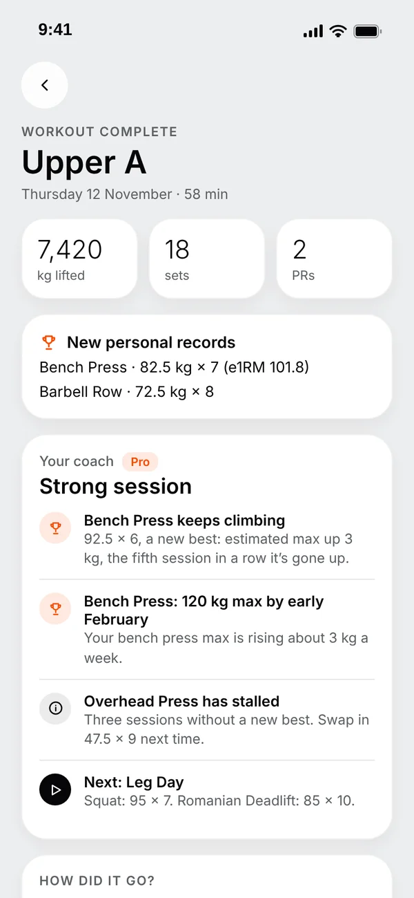

Most people never reach their gym goals.
Spottr tells you what to lift, where you’re stalling, and how to break through.



Stop training on guesswork.
Without Spottr
- Guessing what you lifted last week
- Doing the same workout for months
- Plateaus you don't notice
- No idea if any of it is working
With Spottr
- The number to beat on every set
- A review and new targets after every session
- Stalls caught early, with a fix
- Your next milestone, and when you'll hit it
Never forget a number again.
Every set you've ever done, one tap away. Your weight carries over and the rest timer starts itself.
No more notes app. No more guessing at the rack.
| Squat | |
|---|---|
| Set 1 | 100 × 5 |
| Set 2 | 100 × 5 |
| Set 3, best ever | 105 × 5 |
Get stronger, and see it.
Watch every lift climb week by week, and know when you'll hit your next milestone.
Progress you can see is progress you keep chasing.
Insights that make you better.
After every workout Spottr shows what's working, what's stalling and what to change.
Every session without it is a session you can't learn from.
New best
Squat, 105 × 5Your estimated max is up 6 kg in four weeks.
Stalled
Romanian Deadlift, stuck at 90 kgThree sessions in a row. Try 80 kg for sets of 10, then build back up.
Next time
Squat 105 × 6One more rep before you add weight.
Built on research, not gym myths.
Every rep range, rest time and set count in your plan comes from published sports science. You just lift.
Free to use. Pro when you want more.
Free
Everything you need to train.
- Logging and rest timer
- Progress charts and personal records
- How-tos for 149 exercises
Pro
Free for everyone during the beta.
- Every insight, after every workout
- Milestone forecasts and strength levels
- A plan built for your goal, all your history
Simple on purpose.
No account needed. Your workouts stay on your phone.
Join the iPhone beta